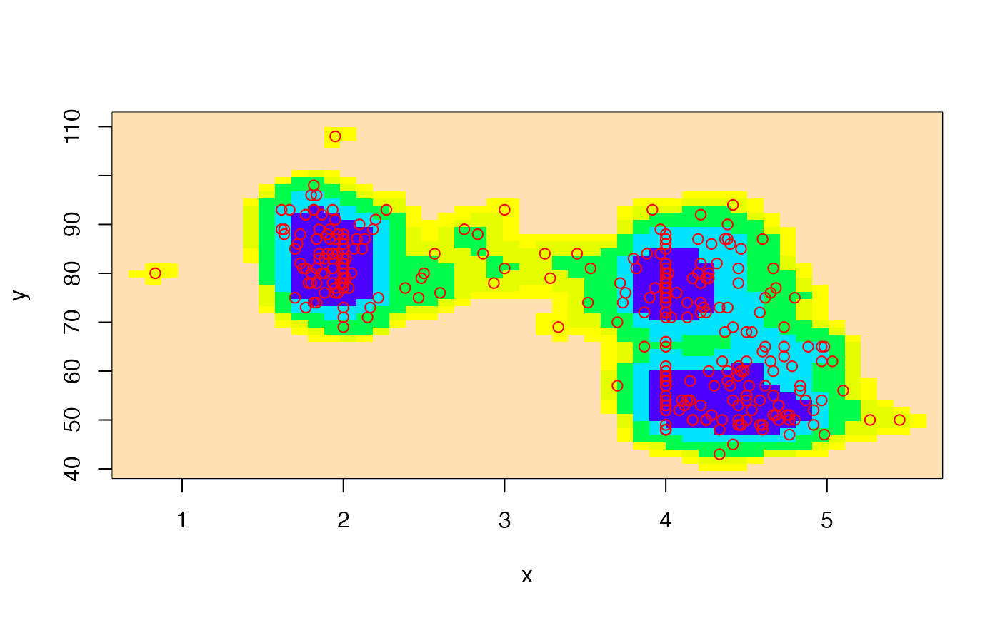
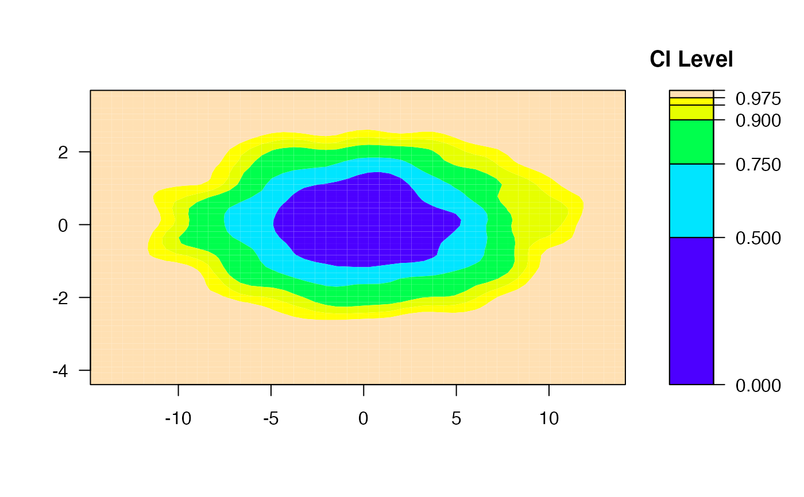
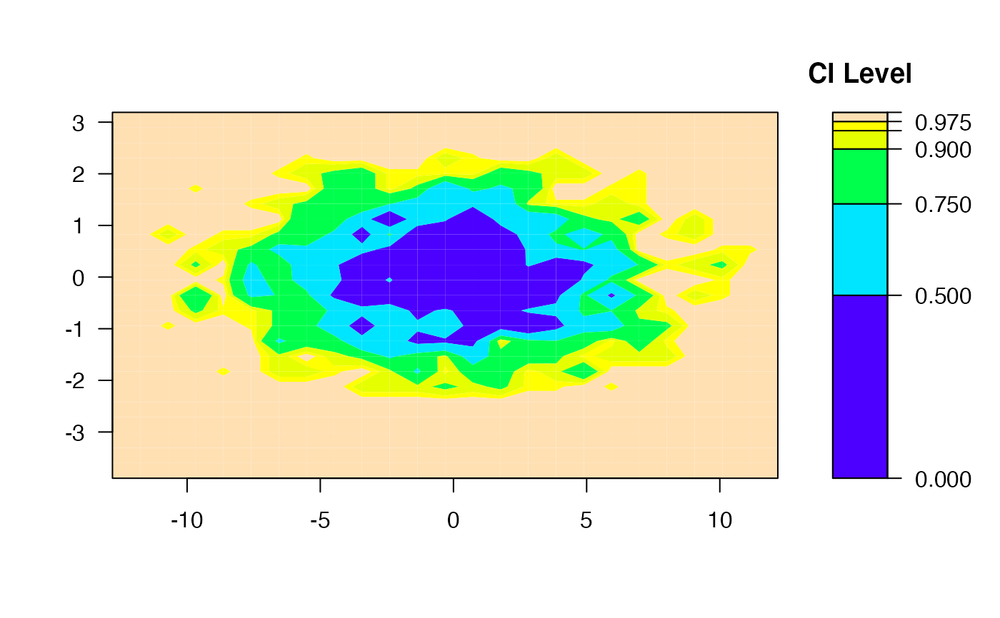
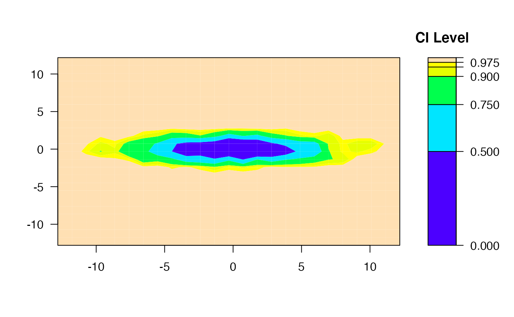
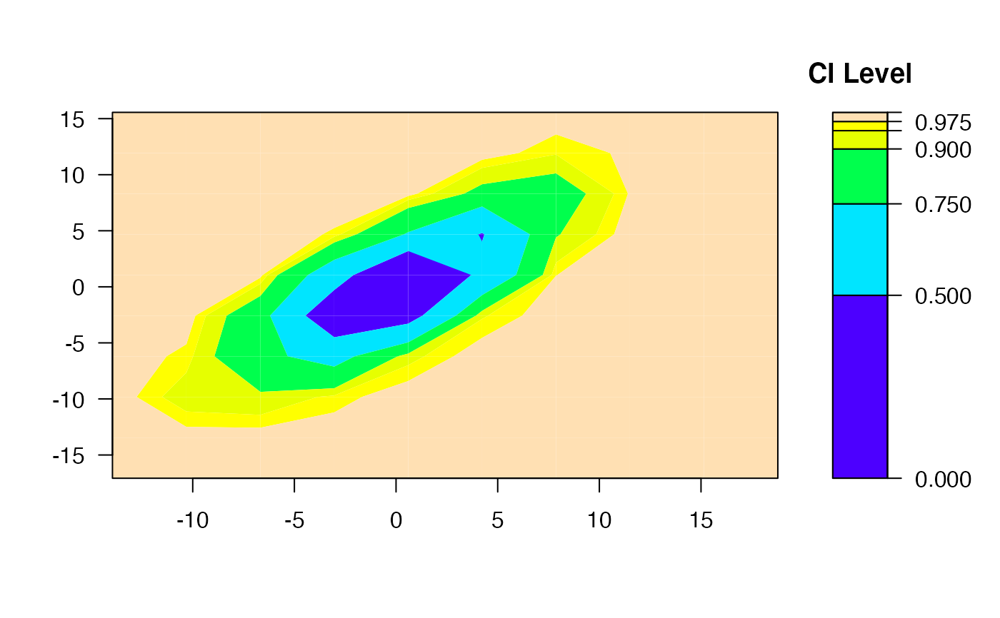
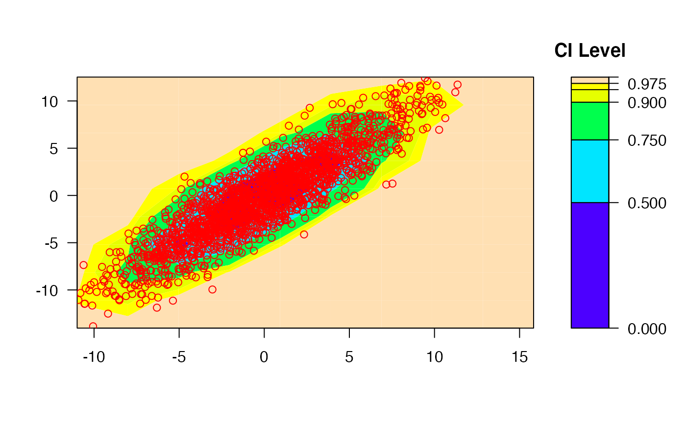
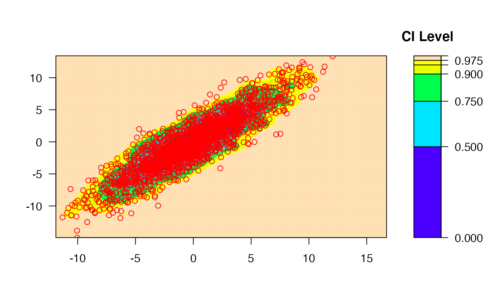
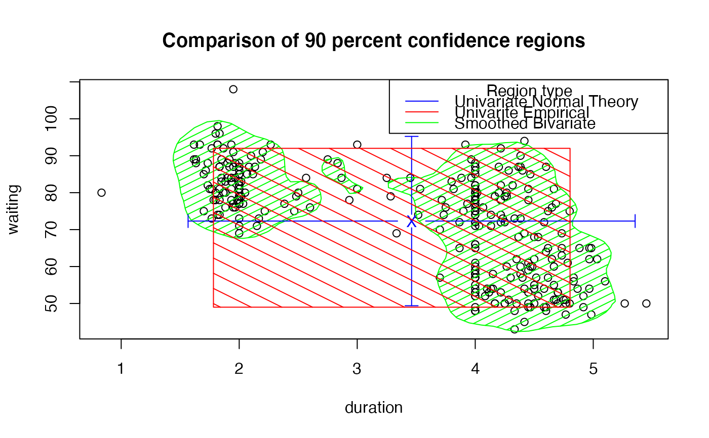

Create 2-dimensional empirical confidence regions
ci2d.RdCreate 2-dimensional empirical confidence regions from provided data.
ci2d(x, y = NULL, nbins=51, method=c("bkde2D","hist2d"), bandwidth, factor=1.0, ci.levels=c(0.50,0.75,0.90,0.95,0.975), show=c("filled.contour","contour","image","none"), col=topo.colors(length(breaks)-1), show.points=FALSE, pch=par("pch"), points.col="red", xlab, ylab, ...) # S3 method for ci2d print(x, ...)
Arguments
| x | either a vector containing the x coordinates or a matrix with 2 columns. |
|---|---|
| y | a vector contianing the y coordinates, not required if `x' is matrix |
| nbins | number of bins in each dimension. May be a scalar or a 2 element vector. Defaults to 51. |
| method | One of "bkde2D" (for KernSmooth::bdke2d) or "hist2d" (for gplots::hist2d) specifyting the name of the method to create the 2-d density summarizing the data. Defaults to "bkde2D". |
| bandwidth | Bandwidth to use for |
| factor | Numeric scaling factor for bandwidth. Useful for exploring effect of changing the bandwidth. Defaults to 1.0. |
| ci.levels | Confidence level(s) to use for plotting
data. Defaults to |
| show | Plot type to be displaed. One of "filled.contour", "contour", "image", or "none". Defaults to "filled.contour". |
| show.points | Boolean indicating whether original data values
should be plotted. Defaults to |
| pch | Point type for plots. See |
| points.col | Point color for plotting original data. Defaiults to "red". |
| col | Colors to use for plots. |
| xlab, ylab | Axis labels |
| ... | Additional arguments passed to |
Details
This function utilizes either KernSmooth::bkde2D or
gplots::hist2d to estmate a 2-dimensional density of the data
passed as an argument. This density is then used to create and
(optionally) display confidence regions.
When bandwidth is ommited and method="bkde2d",
KernSmooth::dpik is appled in x and y dimensions to select the
bandwidth.
Note
Confidence intervals generated by ci2d are approximate, and are subject to biases and/or artifacts induced by the binning or kernel smoothing method, bin locations, bin sizes, and kernel bandwidth.
The conf2d function in the r2d2 package may create a more
accurate confidence region, and reports the actual proportion of
points inside the region.
Value
A ci2d object consisting of a list containing (at least) the
following elements:
number of original data points
x position of each density estimate bin
y position of each density estimate bin
Matrix containing the probability density of each bin (count in bin/total count)
Matrix where each element contains the cumulative probability density of all elements with the same density (used to create the confidence region plots)
List of contours of each confidence region.
Call used to create this object
See also
Examples
#### ## Basic usage #### data(geyser, package="MASS") x <- geyser$duration y <- geyser$waiting # 2-d confidence intervals based on binned kernel density estimate ci2d(x,y) # filled contour plotci2d(x,y, show.points=TRUE) # show original data# image plot ci2d(x,y, show="image")ci2d(x,y, show="image", show.points=TRUE)# contour plot ci2d(x,y, show="contour", col="black")ci2d(x,y, show="contour", col="black", show.points=TRUE)#### ## Control Axis scales #### x <- rnorm(2000, sd=4) y <- rnorm(2000, sd=1) # 2-d confidence intervals based on binned kernel density estimate ci2d(x,y)# 2-d confidence intervals based on 2d histogram ci2d(x,y, method="hist2d", nbins=25)#> Warning: Binning grid too coarse for current (small) bandwidth: consider increasing 'gridsize'ci2d(x,y, method="hist2d", same.scale=TRUE, nbins=25) # hist2d#### ## Control smoothing and binning #### x <- rnorm(2000, sd=4) y <- rnorm(2000, mean=x, sd=2) # Default 2-d confidence intervals based on binned kernel density estimate ci2d(x,y)# change the smoother number of bins ci2d(x,y, nbins=10)#> Warning: Binning grid too coarse for current (small) bandwidth: consider increasing 'gridsize'ci2d(x,y)ci2d(x,y, nbins=100)# Default 2-d confidence intervals based on 2d histogram ci2d(x,y, method="hist2d", show.points=TRUE)# change the number of histogram bins ci2d(x,y, nbin=10, method="hist2d", show.points=TRUE )ci2d(x,y, nbin=25, method="hist2d", show.points=TRUE )#### ## Perform plotting manually #### data(geyser, package="MASS") # let ci2d handle plotting contours... ci2d(geyser$duration, geyser$waiting, show="contour", col="black")# call contour() directly, show the 90 percent CI, and the mean point est <- ci2d(geyser$duration, geyser$waiting, show="none") contour(est$x, est$y, est$cumDensity, xlab="duration", ylab="waiting", levels=0.90, lwd=4, lty=2)#### ## Extract confidence region values ### data(geyser, package="MASS") ## Empirical 90 percent confidence limits quantile( geyser$duration, c(0.05, 0.95) )#> 5% 95% #> 1.781667 4.803333#> 5% 95% #> 49 92## Bivariate 90 percent confidence region est <- ci2d(geyser$duration, geyser$waiting, show="none") names(est$contours) ## show available contours#> [1] "0.5" "0.5" "0.5" "0.75" "0.75" "0.9" "0.9" "0.9" "0.95" #> [10] "0.975" "0.975" "0.975" "1" "1" "1" "1"ci.90 <- est$contours[names(est$contours)=="0.9"] # get region(s) ci.90 <- rbind(ci.90[[1]],NA, ci.90[[2]], NA, ci.90[[3]]) # join them print(ci.90) # show full contour#> x y #> 1 1.526652 78.00100 #> 2 1.520334 78.43451 #> 3 1.505526 79.90177 #> 4 1.498197 81.36902 #> 5 1.490886 82.83628 #> 6 1.479440 84.30353 #> 7 1.462897 85.77079 #> 8 1.449958 87.23804 #> 9 1.440848 88.70530 #> 10 1.442839 90.17255 #> 11 1.454784 91.63981 #> 12 1.472003 93.10706 #> 13 1.500685 94.57432 #> 14 1.526652 95.19393 #> 15 1.559131 96.04157 #> 16 1.617806 97.50883 #> 17 1.627590 97.68333 #> 18 1.714635 98.97608 #> 19 1.728529 99.16754 #> 20 1.829467 99.52422 #> 21 1.902190 98.97608 #> 22 1.930405 98.75198 #> 23 2.001441 97.50883 #> 24 2.031344 96.96819 #> 25 2.085418 96.04157 #> 26 2.132282 95.33502 #> 27 2.215860 94.57432 #> 28 2.233221 94.38900 #> 29 2.317325 93.10706 #> 30 2.334159 92.65774 #> 31 2.364668 91.63981 #> 32 2.379204 90.17255 #> 33 2.383578 88.70530 #> 34 2.386307 87.23804 #> 35 2.388831 85.77079 #> 36 2.399318 84.30353 #> 37 2.435098 82.94130 #> 38 2.536036 83.00782 #> 39 2.576349 82.83628 #> 40 2.636974 82.27676 #> 41 2.667152 81.36902 #> 42 2.688972 79.90177 #> 43 2.694766 78.43451 #> 44 2.684505 76.96726 #> 45 2.655260 75.50000 #> 46 2.636974 75.15474 #> 47 2.569526 74.03274 #> 48 2.536036 73.63059 #> 49 2.435098 72.97800 #> 50 2.405518 72.56549 #> 51 2.334159 71.55041 #> 52 2.313730 71.09823 #> 53 2.251786 69.63098 #> 54 2.233221 69.32254 #> 55 2.142469 68.16372 #> 56 2.132282 68.03823 #> 57 2.031344 67.61998 #> 58 1.930405 67.86785 #> 59 1.904180 68.16372 #> 60 1.829467 68.88220 #> 61 1.764631 69.63098 #> 62 1.728529 70.03697 #> 63 1.661616 71.09823 #> 64 1.627590 71.79147 #> 65 1.592978 72.56549 #> 66 1.562754 74.03274 #> 67 1.543863 75.50000 #> 68 1.533815 76.96726 #> 69 1.526652 78.00100 #> 70 NA NA #> 71 2.737913 84.36406 #> 72 2.702601 85.77079 #> 73 2.702726 87.23804 #> 74 2.728780 88.70530 #> 75 2.737913 88.92268 #> 76 2.838851 89.49949 #> 77 2.874943 88.70530 #> 78 2.890153 87.23804 #> 79 2.894175 85.77079 #> 80 2.904096 84.30353 #> 81 2.939790 83.29632 #> 82 2.956368 82.83628 #> 83 3.040728 81.45426 #> 84 3.047848 81.36902 #> 85 3.040728 80.91434 #> 86 2.988633 79.90177 #> 87 2.939790 79.77276 #> 88 2.931426 79.90177 #> 89 2.897488 81.36902 #> 90 2.841431 82.83628 #> 91 2.838851 82.84583 #> 92 2.742613 84.30353 #> 93 2.737913 84.36406 #> 94 NA NA #> 95 3.343544 80.55432 #> 96 3.264362 81.36902 #> 97 3.262814 82.83628 #> 98 3.343544 83.86099 #> 99 3.444482 84.13361 #> 100 3.545420 83.98935 #> 101 3.564810 84.30353 #> 102 3.646359 85.16856 #> 103 3.667276 85.77079 #> 104 3.711371 87.23804 #> 105 3.747297 88.21581 #> 106 3.761295 88.70530 #> 107 3.799563 90.17255 #> 108 3.848236 91.61093 #> 109 3.850149 91.63981 #> 110 3.949174 92.85127 #> 111 4.050113 93.07323 #> 112 4.129626 93.10706 #> 113 4.151051 93.11728 #> 114 4.251989 93.52810 #> 115 4.352928 93.67499 #> 116 4.417983 93.10706 #> 117 4.453866 92.74089 #> 118 4.504468 91.63981 #> 119 4.554805 90.67480 #> 120 4.577976 90.17255 #> 121 4.620989 88.70530 #> 122 4.655743 87.29638 #> 123 4.657465 87.23804 #> 124 4.675729 85.77079 #> 125 4.679825 84.30353 #> 126 4.688109 82.83628 #> 127 4.713564 81.36902 #> 128 4.756682 80.27291 #> 129 4.770533 79.90177 #> 130 4.810875 78.43451 #> 131 4.847559 76.96726 #> 132 4.857620 76.04432 #> 133 4.863988 75.50000 #> 134 4.857620 74.76464 #> 135 4.851404 74.03274 #> 136 4.826268 72.56549 #> 137 4.822707 71.09823 #> 138 4.857620 70.14403 #> 139 4.879648 69.63098 #> 140 4.958558 68.64356 #> 141 4.993910 68.16372 #> 142 5.059497 67.26021 #> 143 5.091469 66.69647 #> 144 5.131592 65.22921 #> 145 5.151538 63.76196 #> 146 5.147964 62.29470 #> 147 5.130174 60.82745 #> 148 5.111120 59.36019 #> 149 5.113432 57.89294 #> 150 5.132810 56.42568 #> 151 5.151330 54.95843 #> 152 5.160435 53.90290 #> 153 5.165968 53.49117 #> 154 5.181295 52.02392 #> 155 5.186603 50.55666 #> 156 5.160435 49.79061 #> 157 5.149455 49.08941 #> 158 5.106121 47.62215 #> 159 5.059497 46.71834 #> 160 5.031109 46.15490 #> 161 4.958558 45.21630 #> 162 4.899437 44.68764 #> 163 4.857620 44.34279 #> 164 4.756682 43.99259 #> 165 4.655743 43.69261 #> 166 4.564788 43.22039 #> 167 4.554805 43.13902 #> 168 4.453866 42.53020 #> 169 4.352928 42.38644 #> 170 4.251989 42.94142 #> 171 4.227531 43.22039 #> 172 4.151051 43.84742 #> 173 4.050113 44.17547 #> 174 3.960667 44.68764 #> 175 3.949174 44.74952 #> 176 3.848236 46.03264 #> 177 3.841648 46.15490 #> 178 3.793690 47.62215 #> 179 3.769244 49.08941 #> 180 3.750798 50.55666 #> 181 3.747297 50.87603 #> 182 3.724850 52.02392 #> 183 3.705749 53.49117 #> 184 3.688124 54.95843 #> 185 3.677953 56.42568 #> 186 3.679643 57.89294 #> 187 3.695465 59.36019 #> 188 3.720085 60.82745 #> 189 3.747297 62.17827 #> 190 3.749205 62.29470 #> 191 3.761016 63.76196 #> 192 3.752194 65.22921 #> 193 3.747297 65.55238 #> 194 3.726328 66.69647 #> 195 3.693492 68.16372 #> 196 3.646359 69.23910 #> 197 3.623416 69.63098 #> 198 3.567201 71.09823 #> 199 3.545420 71.72056 #> 200 3.514052 72.56549 #> 201 3.499421 74.03274 #> 202 3.493647 75.50000 #> 203 3.491131 76.96726 #> 204 3.476675 78.43451 #> 205 3.444482 79.45455 #> 206 3.401653 79.90177 #> 207 3.343544 80.55432#> [1] 1.440848 5.186603#> [1] 42.38644 99.52422#### ## Visually compare confidence regions #### data(geyser, package="MASS") ## Bivariate smoothed 90 percent confidence region est <- ci2d(geyser$duration, geyser$waiting, show="none") names(est$contours) ## show available contours#> [1] "0.5" "0.5" "0.5" "0.75" "0.75" "0.9" "0.9" "0.9" "0.95" #> [10] "0.975" "0.975" "0.975" "1" "1" "1" "1"ci.90 <- est$contours[names(est$contours)=="0.9"] # get region(s) ci.90 <- rbind(ci.90[[1]],NA, ci.90[[2]], NA, ci.90[[3]]) # join them plot( waiting ~ duration, data=geyser, main="Comparison of 90 percent confidence regions" )## Univariate Normal-Theory 90 percent confidence region mean.x <- mean(geyser$duration) mean.y <- mean(geyser$waiting) sd.x <- sd(geyser$duration) sd.y <- sd(geyser$waiting) t.value <- qt(c(0.05,0.95), df=length(geyser$duration), lower=TRUE) ci.x <- mean.x + t.value* sd.x ci.y <- mean.y + t.value* sd.y plotCI(mean.x, mean.y, li=ci.x[1], ui=ci.x[2], barcol="blue", col="blue", err="x", pch="X", add=TRUE )plotCI(mean.x, mean.y, li=ci.y[1], ui=ci.y[2], barcol="blue", col="blue", err="y", pch=NA, add=TRUE )# rect(ci.x[1], ci.y[1], ci.x[2], ci.y[2], border="blue", # density=5, # angle=45, # col="blue" ) ## Empirical univariate 90 percent confidence region box <- cbind( x=quantile( geyser$duration, c(0.05, 0.95 )), y=quantile( geyser$waiting, c(0.05, 0.95 )) ) rect(box[1,1], box[1,2], box[2,1], box[2,2], border="red", density=5, angle=-45, col="red" )## now a nice legend legend( "topright", legend=c(" Region type", "Univariate Normal Theory", "Univarite Empirical", "Smoothed Bivariate"), lwd=c(NA,1,1,1), col=c("black","blue","red","green"), lty=c(NA,1,1,1) )